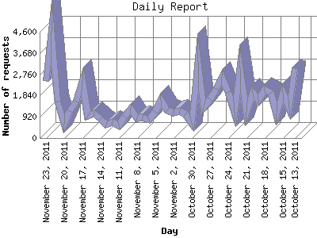

Analog 5.1
Analog 5.1 Report Magic 2.21
Report Magic 2.21The Daily Report identifies the activity for each day within the reporting period. Remember that one page hit can result in several server requests as the images for each page are loaded.

| Day | Number of requests | Number of page requests | |
|---|---|---|---|
| 1. | October 13, 2011 | 3,012 | 150 |
| 2. | October 14, 2011 | 1,315 | 75 |
| 3. | October 15, 2011 | 1,940 | 97 |
| 4. | October 16, 2011 | 1,061 | 67 |
| 5. | October 17, 2011 | 1,949 | 104 |
| 6. | October 18, 2011 | 2,078 | 103 |
| 7. | October 19, 2011 | 1,643 | 109 |
| 8. | October 20, 2011 | 1,954 | 96 |
| 9. | October 21, 2011 | 1,134 | 89 |
| 10. | October 22, 2011 | 3,017 | 90 |
| 11. | October 23, 2011 | 1,137 | 66 |
| 12. | October 24, 2011 | 1,976 | 88 |
| 13. | October 25, 2011 | 2,656 | 118 |
| 14. | October 26, 2011 | 2,112 | 91 |
| 15. | October 27, 2011 | 1,689 | 83 |
| 16. | October 28, 2011 | 1,346 | 61 |
| 17. | October 29, 2011 | 3,293 | 93 |
| 18. | October 30, 2011 | 664 | 48 |
| 19. | October 31, 2011 | 1,029 | 71 |
| 20. | November 1, 2011 | 1,152 | 89 |
| 21. | November 2, 2011 | 1,092 | 112 |
| 22. | November 3, 2011 | 1,193 | 72 |
| 23. | November 4, 2011 | 1,657 | 105 |
| 24. | November 5, 2011 | 1,135 | 59 |
| 25. | November 6, 2011 | 792 | 50 |
| 26. | November 7, 2011 | 877 | 80 |
| 27. | November 8, 2011 | 848 | 92 |
| 28. | November 9, 2011 | 1,274 | 83 |
| 29. | November 10, 2011 | 927 | 71 |
| 30. | November 11, 2011 | 537 | 67 |
| 31. | November 12, 2011 | 687 | 56 |
| 32. | November 13, 2011 | 575 | 88 |
| 33. | November 14, 2011 | 835 | 68 |
| 34. | November 15, 2011 | 1,051 | 61 |
| 35. | November 16, 2011 | 956 | 75 |
| 36. | November 17, 2011 | 2,484 | 136 |
| 37. | November 18, 2011 | 1,580 | 93 |
| 38. | November 19, 2011 | 1,161 | 70 |
| 39. | November 20, 2011 | 625 | 83 |
| 40. | November 21, 2011 | 1,590 | 90 |
| 41. | November 22, 2011 | 4,588 | 73 |
| 42. | November 23, 2011 | 2,470 | 140 |
Most active day September 16, 2011 : 171 pages sent. 4,588 requests handled.
Daily average: 86 pages sent. 1,549 requests handled.
This report was generated on November 24, 2011 04:12.
Report time frame July 13, 2011 04:17 to November 23, 2011 23:59.
| Web statistics report produced by: | |
| Analog 5.1 | Report Magic 2.21 |